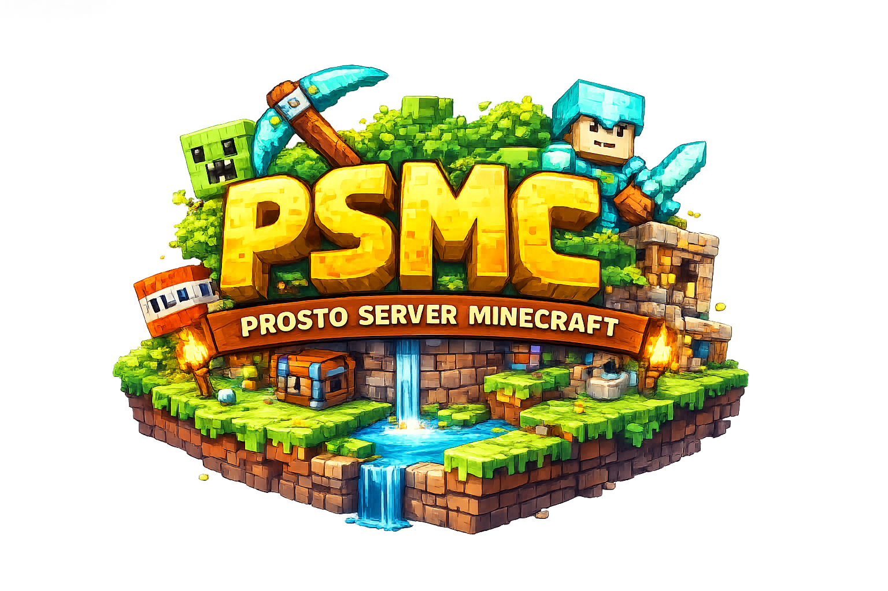

Prosto Server Minecraft
Реальный статус вашего сервера
Версия 1.21.11
Меню → Сетевая игра → Добавить сервер
psmc.minerent.io:25565
Присоединяйтесь к серверу
Пожалуйста, используйте Java Edition или ожидайте возобновления поддержки Bedrock.
Адрес Bedrock: psmc_bedrock.creepers.sbs:19132 — будет работать после включения.
PSMC — это сервер там есть плагины на улучшение это не типичный сервер здесь просто спавн запривачен и всё дальше сами делайте что угодно(кроме нарушения правил).
Без оскорблений и спама в чате (мут на 30 минут)
Не оставляйте лаг-машины И НЕ СТРОЙТЕ ОРБИТАЛЬНУЮ ПУШКУ (бан на 1 недели, при повторе — бан навсегда)
Любые читы запрещены (бан на 10 дней, при повторе — бан навсегда)
Не стройте плохие постройки (бан на 2 часа)
Важно: Наказания применяются модераторами в индивидуальном порядке. Сервер стремится быть дружелюбным местом для всех.
Эти моды/плагины не обязательны, но улучшают опыт игры. Все они совместимы с ванильным сервером.
Приобретайте привилегии и косметику для сервера PSMC!
Загрузка товаров...
Все покупки обрабатываются через защищённое соединение EasyDonate.
psmc.minerent.io:25565
psmc.minerent.io:19132
(недоступно)